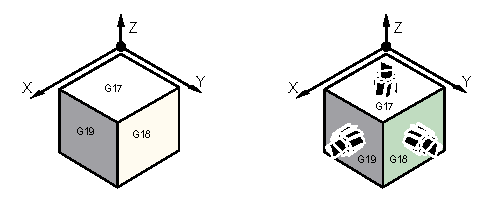
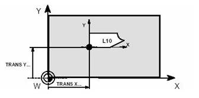
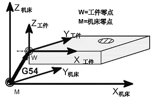
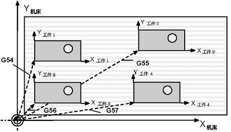

| 坐标系 |
| 平面选择:G17～G19 |
1. 功能
在计算刀具长度补偿和刀具半径补偿时必须首先确定一个平面，即确定一个两坐标轴的坐标平面，在此平面中可以进行刀具半径补偿。另外根据不同的刀具类型(铣刀，钻头，车刀，…) 进行相应的刀具长度补偿。
对于钻头和铣刀，长度补偿的坐标轴为所选平面的垂直坐标轴。
同样，平面选择的不同也影响圆弧插补时圆弧方向的定义：顺时针和逆时针。在圆弧插补的平面中规定横坐标和纵坐标，由此也就确定了顺时针和逆时针旋转方向。也可以在非当前平面G17至G19的平面中运行圆弧插补。
可以有下面几种平面:
G功能 |
平面(横坐标/纵坐标) |
垂直坐标轴(在钻削/铣削时的长度补偿轴) |
G17 |
X/Y |
Z |
G18 |
Z/X |
Y |
G19 |
Y/Z |
X |

| 绝对和相对编程:G90/G91 |
1. 功能
G90和G91指令分别对应着绝对坐标和相对坐标。其中G90表示坐标系中目标点的坐标位置，G91表示待运行的位移量。G90/G91适用于所有坐标轴。
在坐标位置不同于G90/G91的设置时，可以在程序段中通过AC/IC绝对坐标/相对坐标方式进行。这两个指令不决定到达终点位置的轨迹，轨迹由G功能组中的其它G功能指令决定。
2. 编程
绝对坐标 G90 :
在绝对坐标中数值取决于当前坐标系(工件坐标系或机床G90坐标系) 的零点坐标。程序启动后G90适用于所有坐标轴，并且一直有效，直到在后面的程序段中由G91 (相对坐标) 替代为止(模态有效)。
相对坐标 G91 :
在相对坐标中, 数值表示待运行的轴位移。G91移动的方向由符号决定。
G91适用于所有坐标轴，并且可以在后面的程序段中由G90 (绝对坐标) 替换。 用AC =（…），=（…） 赋值时必须要有一个等于符号。数值要写在圆括号内。定义圆心坐标也可以以绝对坐标用AC =（…）定义。
3. G90和G91编程举例
N10 G90 X20 Z90 ；绝对坐标
N20 X75 Z-32 ；仍然是绝对坐标
…
N180 G91 X40 Z20 ；转换为相对坐标
N190 X-12 Z17 ；仍然是相对坐标
| 可编程的零点偏置：TRANS/ATRANS |
1. 功能
如果工件上在不同的坐标重复出现的形状或结构；或者选用了一个新的参考点，在这种情况下就需要使用可编程零点偏置。由此就产生一个当前工件坐标系，新输入的数值均是在该坐标系中的数值。可以在所有坐标轴中进行零点偏移。
2. 编程
TRANS X… Y… Z… ；可编程的偏移，
清除所有有关偏移、旋转、比例系数、镜像的指令
ATRANS X… Y… Z… ；可编程的偏移，附加于当前的指令
TRANS ：不带数值，清除所有有关偏移、旋转、比例系数、镜像的指令
TRANS/ ATRANS指令要求一个独立的程序段。

3. 编程举例
N20 TRANS X20 Y15 … ；可编程零点偏移
N30 L10 ；子程序调用，其中包含待偏移的几何量
…
N70 TRANS ；取消偏移
…
| 工件装夹- 可设定的零点偏置:G54～G59/G500/G53/G153 |
1. 功能
可设定的零点偏置给出工件零点在机床坐标系中的坐标(工件零点以机床零点为基准偏移)。当工件装夹到机床上后求出偏移量，并通过操作面板输入到规定的参数。程序可以通过选择相应的G功能G54 ～ G59激活此值。
2. 编程
G54 第一可设定零点偏置
G55 第二可设定零点偏置
G56 第三可设定零点偏置
G57 第四可设定零点偏置
G58 第五可设定零点偏置
G59 第六可设定零点偏置
G500 取消可设定零点偏置---模态有效
G53 取消可设定零点偏置---程序段方式有效， 可编程的零点偏置也一起取消
G153 如同G53，取消附加的基本框架

